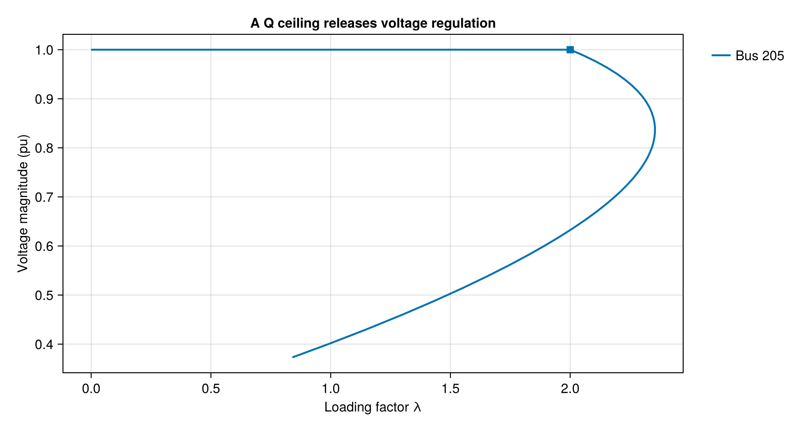
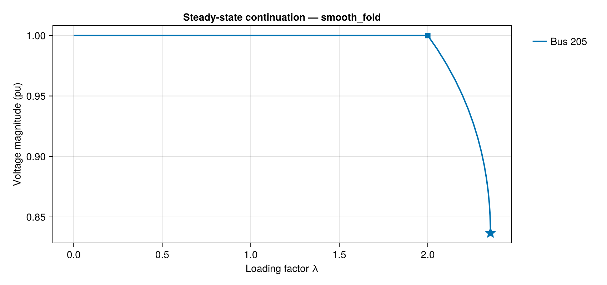
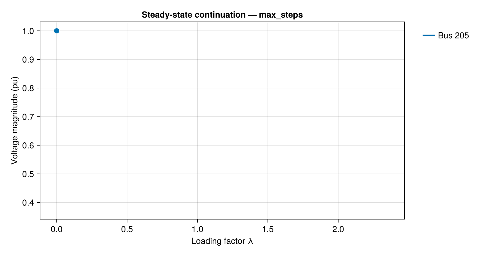
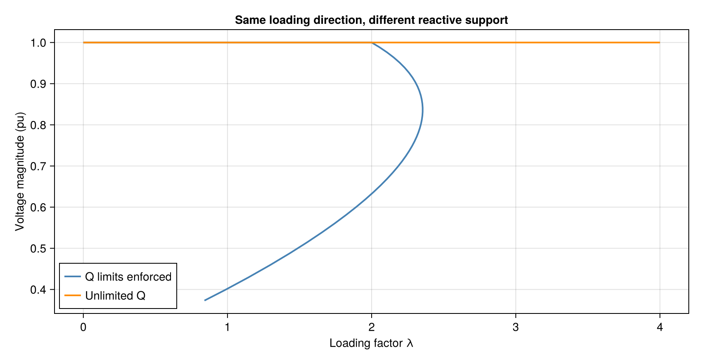
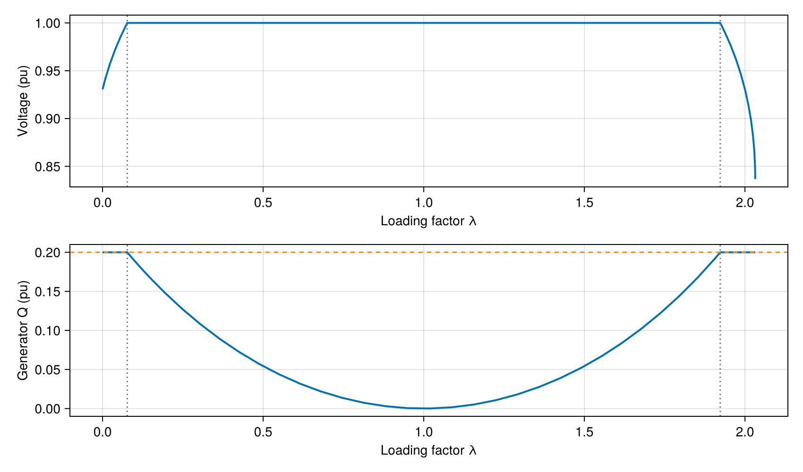
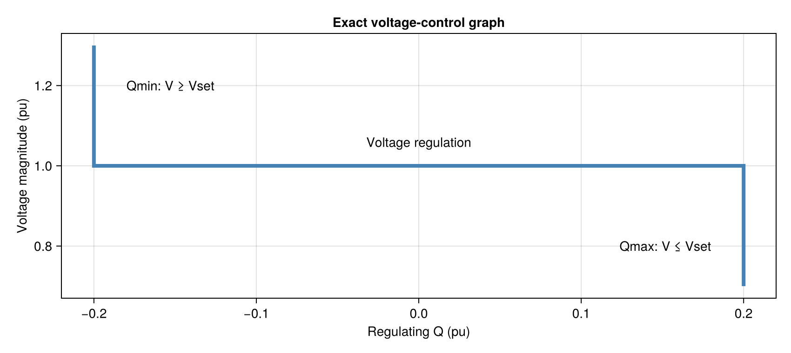
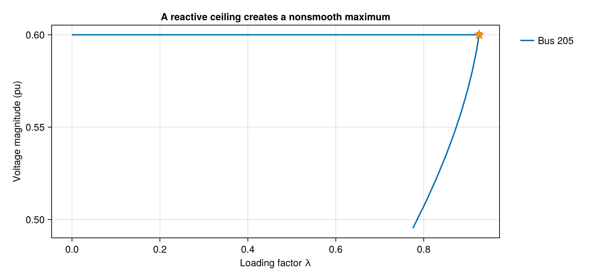

Continuation power flow: a practical manual
A single power-flow solve finds an equilibrium for one set of specified injections. Continuation power flow (CPF) follows a connected curve of equilibria as specified injections change. It can locate a smooth loading nose or a maximum caused by a reactive-power limit, and can continue onto a lower-voltage branch.
The horizontal coordinate is a loading factor, not time. A lower branch is not a predicted voltage-collapse trajectory. Static loadability does not establish dynamic stability, protection behavior, or an operationally safe margin. Reference generation is unrestricted in this initial formulation.
Prefer to see the geometry? The 3D continuation gallery shows a lifted equilibrium curve, an animated tangent predictor and correction plane, reactive-control sheets, and an analytic two-demand equilibrium surface.
1. First trace
This small example has a fixed reference at bus 101, a voltage-controlled load bus 205, and a lossless line with reactance 1 pu. The second generator supplies reactive support but no scheduled active power. Powers are in per-unit on a 100 MVA system base. No dynamic model or initialization is required.
using GradPower, CairoMakie
include(joinpath(@__DIR__, "..", "..", "..", "examples", "continuation.jl"))
limited.status, limited.maximum.lambda(:smooth_fold, 2.3541019663994143)The runnable file is examples/continuation.jl. The default direction scales existing constant-power demands at nonreference buses. Here,
\[P_d(\lambda)=0.2(1+\lambda),\qquad Q_d(\lambda)=0.\]
fig = Figure(size=(850, 260))
ax = Axis(fig[1,1], aspect=DataAspect(), title="Two-bus study network")
hidedecorations!(ax); hidespines!(ax)
lines!(ax, [0., 1.], [0., 0.], linewidth=4, color=:gray50)
scatter!(ax, [0.,1.], [0.,0.], markersize=28, color=[:steelblue,:darkorange])
text!(ax, [0.,1.], [.17,.17], text=["101 · fixed V=1, θ=0", "205 · voltage setpoint 1 pu"], align=(:center,:bottom))
text!(ax, [.5], [.04], text=["X = 1 pu"], align=(:center,:bottom))
text!(ax, [0.,1.], [-.17,-.17], text=["Balances P and Q", "Demand 0.2(1+λ)\nGenerator Q ∈ [−0.2, 0.2]"], align=(:center,:top))
xlims!(ax,-.4,1.5); ylims!(ax,-.5,.45)
fig2. Read the curve and the control event
By default, runcpf seeks a numerically verified local maximum. It can also stop before finding one; always inspect status and maximum. For illustration, the example also creates branch with stop=:steps: it follows accepted points past the nose. Points must stay in tracing order—sorting by loading factor would splice the upper and lower branches together.
plot_cpf(branch; figure_kwargs=(size=(850,450),),
axis_kwargs=(title="A Q ceiling releases voltage regulation",))
Squares mark saturation; triangles mark recovery. A star is drawn only when the result contains a verified terminal maximum. A step-budget trace has maximum === nothing, even if it happens to pass a nose.
plot_cpf(limited; figure_kwargs=(size=(850,400),))
For this circuit, the Q ceiling is reached at $\lambda=2$. After that, generation remains at $Q_g=0.2$ and the voltage can fall. The smooth nose is
\[P_{d,\max}=\sqrt{\tfrac14+0.2},\qquad \lambda_* = \frac{\sqrt{0.45}}{0.2}-1 \approx 2.35410.\]
The following animation reveals one accepted point per frame. It demonstrates branch tracing, not physical evolution. Its speed is arbitrary and steps are not uniformly spaced in loading or arclength.
animate_cpf("cpf_trace.gif", branch; framerate=12,
figure_kwargs=(size=(800,420),))
3. Compare limits with unlimited voltage support
Ignoring Q limits can make a voltage setpoint appear achievable long after the machine has exhausted reactive support. Always distinguish a mathematical unlimited-support curve from a feasible constrained curve.
unlimited = runcpf(system; limits=:none, buses=[205])
fig = Figure(size=(850,440))
ax = Axis(fig[1,1], xlabel="Loading factor λ", ylabel="Voltage magnitude (pu)",
title="Same loading direction, different reactive support")
for (r,label,color) in ((branch,"Q limits enforced",:steelblue),
(unlimited,"Unlimited Q",:darkorange))
lines!(ax, [p.lambda for p in r.points], [p.vm[1] for p in r.points];
label,color,linewidth=2)
end
axislegend(ax,position=:lb)
fig
4. Directions, numbering, and signs
The general specification is
\[s_{\rm specified}(\lambda)=s_0+\lambda b, \qquad b=b_P+\mathrm{i}b_Q.\]
LoadingDirection(ps; dp, dq) takes one value per internal bus index. Positive values increase injection; negative values increase demand. Both vectors are pu on ps.baseMVA; λ is dimensionless. Omitted vectors are zero. With neither vector supplied, the constructor scales existing nonreference loads, so λ = 0 is the base case and λ = 1 doubles those demands. Reference-bus direction entries must be zero. With a custom direction, λ has no universal interpretation as a percentage load increase.
# Extra 10 MW and 5 MVAr demand per unit lambda at internal index 2:
direction = LoadingDirection(system; dp=[0., -10/100], dq=[0., -5/100])
custom = runcpf(system, direction; buses=[205])
(custom.status, custom.maximum === nothing ? nothing : custom.maximum.lambda)(:smooth_fold, 3.3262379213551627)The existing load struct stores reactive demand with a negative sign: Load(..., pd, qd) has physical demand $(pd,-qd)$. Directions use physical injection signs consistently. The convenience constructor handles this conversion for you.
Recording selectors use external bus numbers: buses=[205], not [2]. Returned channel vectors follow result.bus_numbers in exactly the selected order. buses=Int[] records only scalar point diagnostics. Selection reduces retained history, not the full-network solve.
5. Result contract: do not confuse success with a margin
(limited.success, limited.status, limited.maximum.lambda,
limited.sampled_maximum.lambda, limited.rejected_steps)(true, :smooth_fold, 2.3541019663994143, 2.3541019663994143, 1)| Field | Meaning |
|---|---|
status | Why tracing stopped; inspect this first |
maximum | Refined terminal local maximum, or nothing |
sampled_maximum | Largest accepted λ, not a verified margin |
points | Accepted physical operating points, including the base |
events | Located control exchanges, including unrecorded bus identities |
diagnostic | Status-dependent, implementation-level numerical context |
success=true means a verified terminal maximum or completion of a requested stop=:steps budget. In the latter case maximum remains nothing. For stop=:nose, exhausting max_steps is incomplete and success=false. An initial solve failure returns an empty trace; later numerical failure preserves accepted points. Invalid inputs throw ArgumentError.
Each point contains vm (pu), va (rad), pinj/qinj (network injections, pu), pg/qg (aggregate online generator dispatch, pu), control, residual, and Newton iterations. residual covers the full network, not just recorded buses. At a control event, accepted feasibility can be looser than the corrector tol because it also depends on event_tol; inspect the recorded residual. Multiply pu power by baseMVA for MW/MVAr.
A general net direction does not identify whether load or generation changes. Therefore pinj/qinj include the direction, but scheduled generator dispatch is unchanged except for reference balancing and solved PV reactive support. At a PV bus, dq is a specified nonregulating injection separate from bounded regulating generation. Per-machine reactive allocation is not reported.
[(e.bus, e.kind, e.point.lambda, e.error) for e in limited.events]1-element Vector{Tuple{Int64, Symbol, Float64, Float64}}:
(205, :qmax, 1.999999996475331, 5.287006110687997e-10)Events contain selected physical channels and incoming/outgoing tangents. Tangents are per weighted arclength, not derivatives with respect to λ. Their va, vm, and qg channels follow the recording order; reference-bus qg derivatives are NaN because they are not computed. Event control labels identify the outgoing regime. error is the guard residual, not a certified error bar on λ.
Seeing control recovery
Recovery is a physical inequality change, not just undoing a bus-type label. Start above the upper-Q threshold and reduce demand: the bus begins saturated, recovers its voltage setpoint, and eventually saturates again as reverse active power grows. Reactive support can be required for either active-flow direction.
recovery_system = continuation_example()
recovery_system.loads[1].pd = .65
recovery_direction = LoadingDirection(recovery_system; dp=[0., .65])
recovery = runcpf(recovery_system, recovery_direction; buses=[205])
fig = Figure(size=(850,500))
a1 = Axis(fig[1,1], xlabel="Loading factor λ", ylabel="Voltage (pu)")
a2 = Axis(fig[2,1], xlabel="Loading factor λ", ylabel="Generator Q (pu)")
lines!(a1, [p.lambda for p in recovery.points], [p.vm[1] for p in recovery.points], linewidth=2)
lines!(a2, [p.lambda for p in recovery.points], [p.qg[1] for p in recovery.points], linewidth=2)
hlines!(a2,[.2],color=:darkorange,linestyle=:dash)
for e in recovery.events
vlines!(a1,[e.point.lambda],color=:gray50,linestyle=:dot)
vlines!(a2,[e.point.lambda],color=:gray50,linestyle=:dot)
end
fig
Dotted lines show the recovery and subsequent Qmax exchange. Unlike one-way pinning, exact complementarity allows the middle voltage-regulating segment.
6. How the method works
AC equations
With polar complex voltage $v_i=V_i e^{\mathrm{i}\theta_i}$,
\[s_i(v)=v_i\overline{(Yv)_i},\qquad F_P=\Re(s)-p_0-\lambda b_P,\qquad F_Q=\Im(s)-q_0-\lambda b_Q-q_g.\]
These balance rows apply at nonreference buses. Here q_g is zero at PQ buses and is the aggregate regulating-Q unknown at originally PV buses; q_0 excludes that regulating generation to avoid double-counting. The reference angle and magnitude are fixed, and its omitted balances determine its dispatch. Unknowns are nonreference angles, nonreference magnitudes, and aggregate regulated Q. Analytic sparse derivatives use the actual admittance rows, including nonsymmetric entries introduced by phase-shifting transformers.
Complementarity: voltage regulation and reactive bounds
For one regulating bus with setpoint $V_s$, limits $[l,u]$ and positive scaling $\kappa$, the exact control equation is
\[R(q,V)=q-\operatorname{clamp}\big(q-\kappa(V-V_s),l,u\big)=0.\]
For distinct bounds $l<u$, it encodes three operating regimes:
\[\begin{array}{lll} l<q<u &: &V=V_s,\\ q=u &: &V\le V_s,\\ q=l &: &V\ge V_s. \end{array}\]
The inequalities are essential. A saturated generator can recover voltage control if the required support returns inside its limits. Clamping Q forever would miss that recovery. At a transition, both the voltage setpoint and a Q bound hold. Equal bounds $l=u$ instead fix Q and impose no voltage inequality. Bounds $l=-\infty, u=+\infty$ give unlimited support; a single infinite bound removes only that side's restriction. Only online machines enter aggregate bounds.
fig = Figure(size=(850,380))
ax = Axis(fig[1,1], xlabel="Regulating Q (pu)", ylabel="Voltage magnitude (pu)",
title="Exact voltage-control graph")
lines!(ax,[-.2,-.2, .2,.2],[1.3,1.,1.,.7],linewidth=4,color=:steelblue)
text!(ax,[0.],[1.04],text=["Voltage regulation"],align=(:center,:bottom))
text!(ax,[-.18],[1.2],text=["Qmin: V ≥ Vset"],align=(:left,:center))
text!(ax,[.18],[.8],text=["Qmax: V ≤ Vset"],align=(:right,:center))
fig
Why ordinary loading steps fail at a nose
Solving repeatedly at fixed λ requires an invertible $F_x$. At a simple smooth fold, it becomes singular. Instead, continuation solves for both state and loading, $z=(x,\lambda)$, adding a local hyperplane constraint:
\[F(x,\lambda)=0,\qquad \tau_k^T W(z-z_{\rm pred})=0,\qquad z_{\rm pred}=z_k+\Delta s\,\tau_k.\]
The tangent satisfies $[F_x\;F_\lambda]\tau=0$ and $\tau^TW\tau=1$. With $N=\tau_k^TW(z-z_{\rm pred})$, the augmented Newton system is
\[\begin{bmatrix}F_x&F_\lambda\\\tau_k^TW\end{bmatrix}\Delta z =-\begin{bmatrix}F\\N\end{bmatrix}.\]
The full sparse augmented matrix is factored: the algorithm does not assume $F_x^{-1}$ exists at the fold. For $m$ nonreference buses and $n_c$ controlled buses, each angle and magnitude has weight $1/m$, each controlled Q has weight $1/n_c$ when that block is present, and λ has weight 1. Predictor error adjusts the step; failed trial corrections roll back and retry.
Smooth folds versus limit-induced maxima
A candidate smooth nose has $d\lambda/ds=0$. With right and left null vectors $v$ and $\ell$ of $F_x$, numerical verification checks
\[\operatorname{rank}(F_x)=n-1,\qquad \ell^T F_\lambda\ne0,\qquad \ell^T F_{xx}[v,v]\ne0.\]
These are tolerance-based simple-fold checks, not rigorous certificates. A control event can introduce a kink: if the feasible incoming tangent increases λ and the outgoing tangent decreases it, the limit itself creates the local maximum. It need not have a singular Jacobian on either smooth side.
kink_system = continuation_example(voltage=.6, qmin=-.4, qmax=-.1)
kink = runcpf(kink_system; buses=[205])
kink_branch = runcpf(kink_system; buses=[205], stop=:steps, max_steps=18)
fig = plot_cpf(kink_branch; figure_kwargs=(size=(850,400),),
axis_kwargs=(title="A reactive ceiling creates a nonsmooth maximum",))
ax = only(filter(x -> x isa Axis, fig.content))
scatter!(ax, [kink.maximum.lambda], [kink.maximum.vm[1]],
marker=:star5, markersize=18, color=:darkorange)
fig
The star is the verified maximum from the separate stop=:nose run; the step-budget curve shows the feasible outgoing branch reversing in λ. This is not a smooth turning point: the two one-sided tangents differ.
Controls are bracketed in a local arclength section, not λ. Corrected interior probes help detect hidden exit/reentry events. Simultaneous boundaries are resolved together. Coincident or grazing degeneracies can stop explicitly rather than guessing a maximum. Finite sampling is not an interval proof that every possible guard root has been found.
7. Numerical options and limitations
Start with defaults. To check sensitivity, reduce steps and tighten tolerances:
tight = runcpf(system; buses=[205], ds0=.025, ds_max=.1,
tol=1e-11, event_tol=1e-9)
abs(tight.maximum.lambda - limited.maximum.lambda)1.4972956208225696e-10tol: corrector infinity-norm tolerance.event_tol ≥ tol: event-location/degeneracy tolerance, not a global λ error bound.predictor_tol: weighted predictor-error target.ds0,ds_min,ds_max: initial/minimum/maximum weighted steps.max_steps,max_newton,max_retries: bounded work budgets.control_scale: positive pu Q per pu voltage; it leaves the exact feasible set unchanged, but can affect conditioning and tolerance-based decisions.
Current scope is CPU, one connected network, one fixed-voltage reference, constant-power loads, and local aggregate reactive control. Distributed slack, additional device-control models, GPU/batched tracing, and margin sensitivities are follow-ups. Reference P/Q capability, thermal limits, and operational voltage limits are not enforced. Fold verification uses a dense SVD, so its memory and runtime can matter on large systems. Ordinary runpf! behavior is unchanged; its one-way PV-to-PQ limit handling is distinct from CPF recovery.
References
- Ajjarapu and Christy (1992), The continuation power flow: a tool for steady state voltage stability analysis, DOI: 10.1109/59.141737.
- Continuation power flow with adaptive stepsize control via convergence monitor, DOI: 10.1049/iet-gtd.2011.0573.
- An Asymptotic Numerical Continuation Power Flow to Cope with Non-Smooth Issue, DOI: 10.3390/en12183493.
See API reference for complete callable signatures.